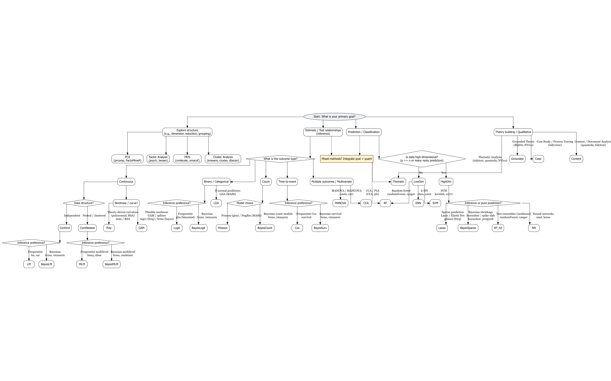

Statistical Methods Flowchart
A guide to selecting statistical methods across research contexts.

Tip: Use your browser zoom (Ctrl + Scroll) to explore details.
A guide to selecting statistical methods across research contexts.

Tip: Use your browser zoom (Ctrl + Scroll) to explore details.